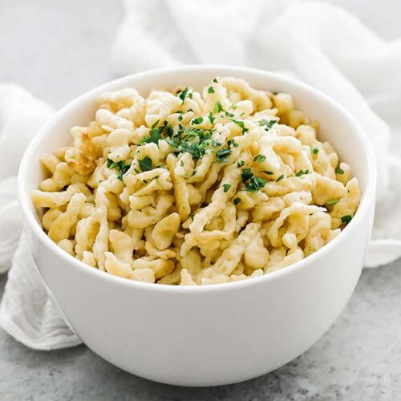

Easy German Spaetzle

Authentic homemade German Spaetzle
Serves as a great German side dish for all kinds of recipes!
Ingredients:
- 4 cups all-purpose flour
- 2 tsp salt
- 8 large eggs
- 3/4 cup milk
Steps:
- In a bowl, whisk together the flour, eggs, milk, and salt. Stir until the batter is well combined and develops bubbles. You can also use a mixer. The batter should neither be too thin nor too thick or it will be difficult to make the spaetzle with your spaetzle maker. Let the batter sit for 5-10 min.
- Put a colander into a bowl to drain the Spaetzle once cooked and bring a large pot of water over high heat to a boil, add about 1 Tbsp of salt to the water, and reduce temperature to a simmer.
- Press batter through a spaetzle maker, a large holed sieve or colander into the simmering water.
- Work in batches, after using about 1/3 of the batter stop adding new spaetzle and let them cook for about 2-3 minutes, or until they float to the top. Stir occasionally. Use a slotted spoon to transfer the spaetzle to the colander so that excess water can drip off.
- Serve the spaetzle immediately or saute them in butter to crisp them up a little. If you don't serve or saute them right away, add 1 or 2 Tbsp of butter to the hot spaetzle to prevent them from sticking together.